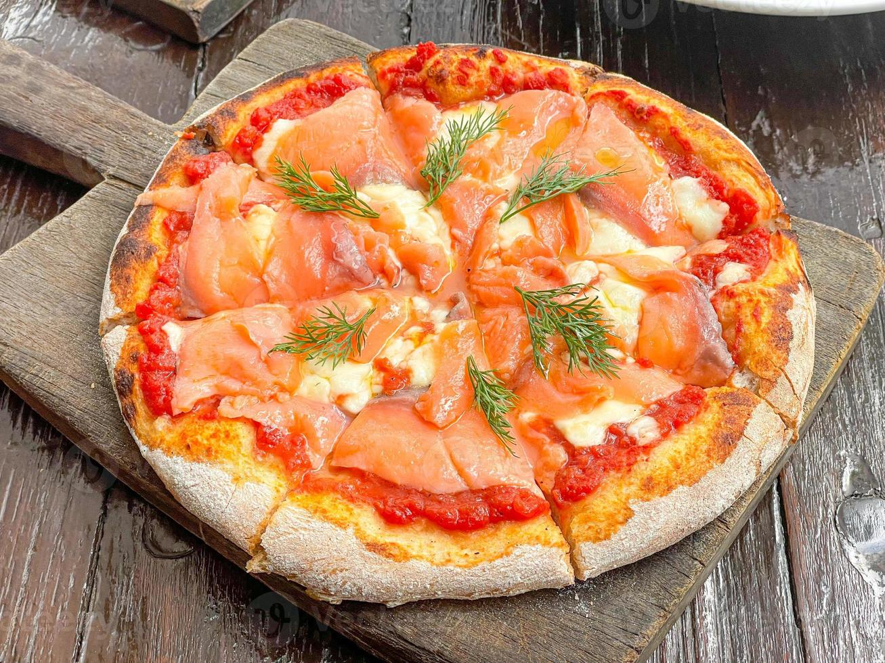

Pizza

Smoked Salmon Pizza
This smoked salmon pizza recipe is a winning combination of foods and make a light and easy pizza that's ready in 20 minutes.
Ingredients
- 1 (12 inch) pre-baked pizza crust
- 1 tablespoon olive oil
- 1 cup smoked salmon, cut into 1/2 inch pieces
- ½ (6 ounce) jar marinated artichoke hearts, drained and quartered
- 2 tablespoons chopped sun-dried tomatoes
- 2 cups shredded mozzarella cheese
Steps
- Preheat the oven to 400 degrees F (200 degrees C).
- Spread olive oil over pizza crust, then sprinkle with smoked salmon, artichokes, and sun-dried tomatoes. Sprinkle mozzarella cheese evenly over pizza.
- Bake in the preheated oven until cheese has melted and is bubbly, 10 to 15 minutes.